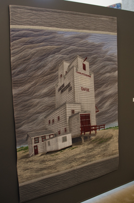
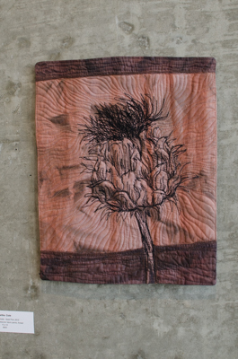

Martha's first painting she ever did when she was 14.

The first textile she had done. A landscape done near Disley, Saskatchewan, where she is from after she went to school in the fine arts in 1978.
Dafor, SK - 2005

Multiple textile works done by Martha.
Canadian Thistle, Seed Pod - 2012